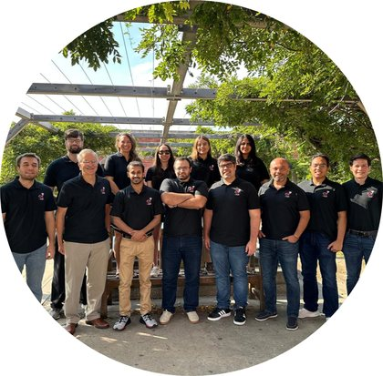

Everything the consortium has published: journal papers, expanded abstracts, magazine columns, and preprints. Search a title, an author, a basin, or an attribute.
Loading…

Loading the publication list…